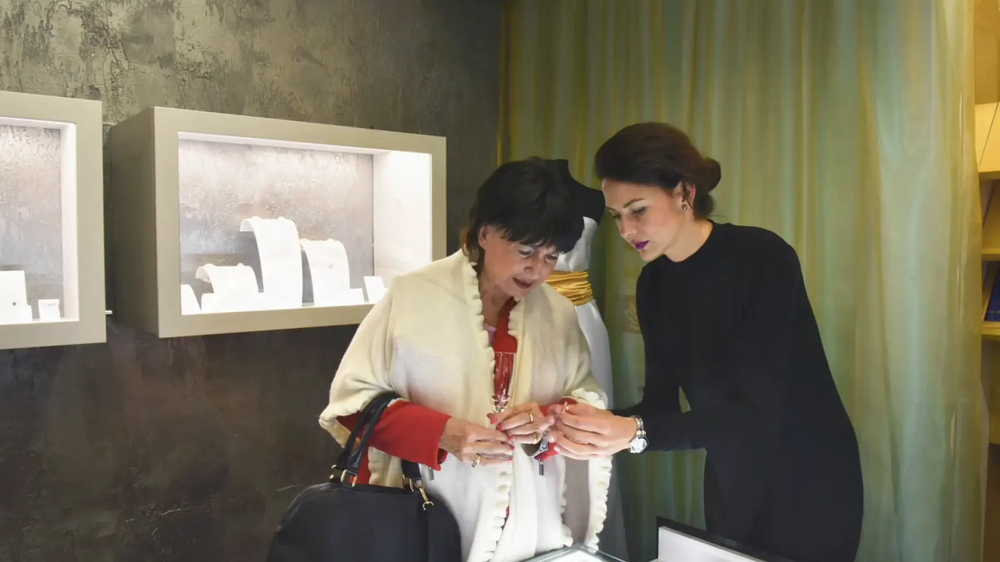
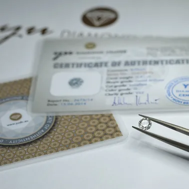
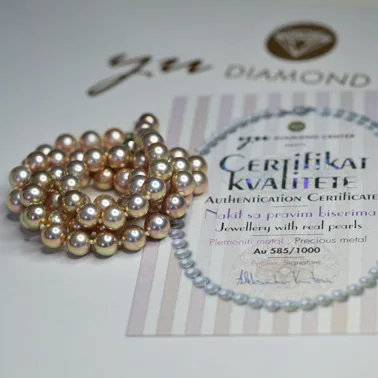
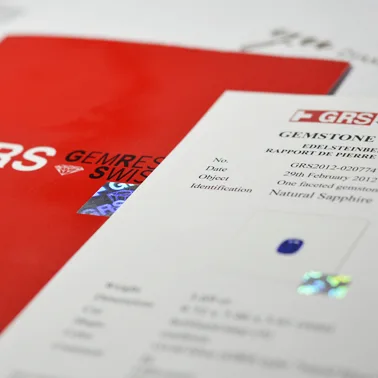
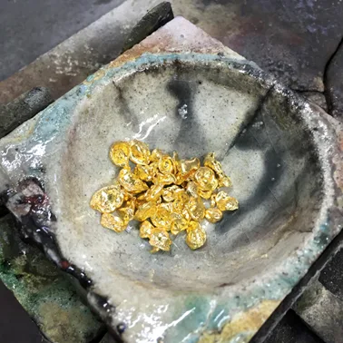
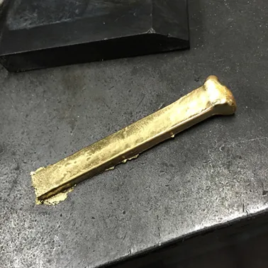
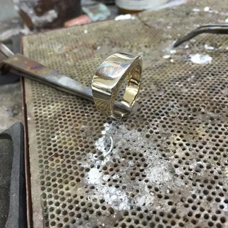
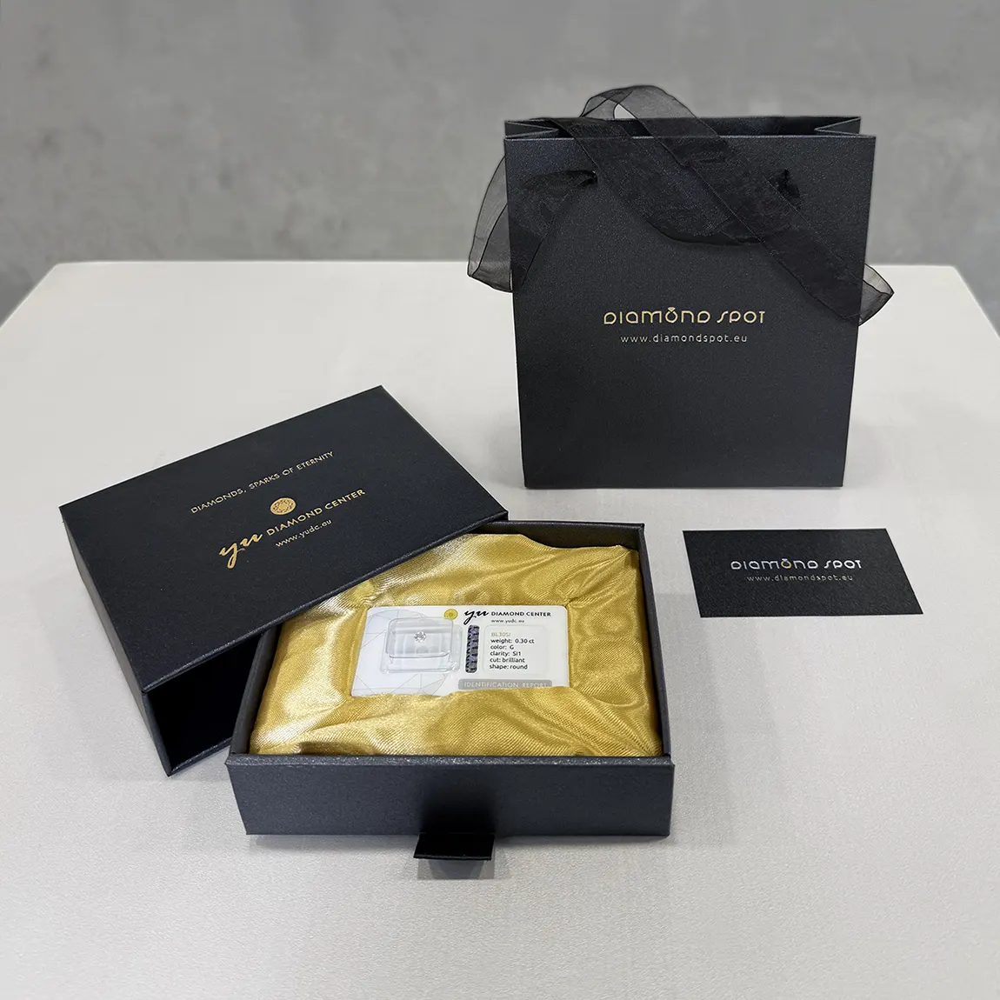
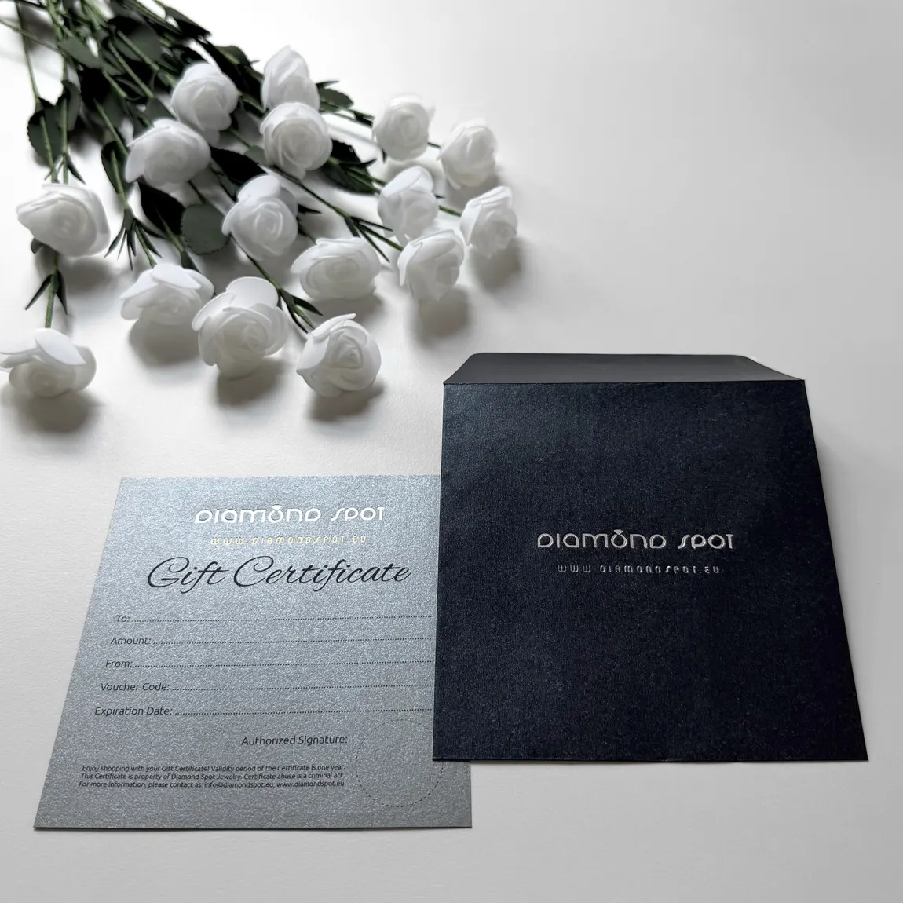

Obchod v Masné 15
Diamond Spot je rodinná značka. Stojí za ní manželé, profesionální gemolog a designérka šperků Daniela Komatović. Klenotnictví najdete v Masné ulici 15, ve funkcionalistickém domě od prvorepublikových architektů Otty a Karla Kohnů.

Galerie v Masné
Prostor navrhla sama Daniela jako místo s atmosférou pařížské galerie. Snubní prsteny si tu můžete vyzkoušet u šálku dobré kávy.
„Atmosféra byla příjemná, dostal jsem i kávu.“
Filip, recenze na Googlu
Uvnitř
Zlatá stěna se stovkami snubních prstenů a vitríny se šperky.


Gemolog
Diamanty vybírá na diamantových burzách v Izraeli a Belgii, barevné kameny přiváží přímo z Barmy, Kolumbie, Zambie, Srí Lanky, Thajska a Madagaskaru.

Profesionální lupou, mikroskopy, refraktometry a diamantovými váhami zkoumá strukturu kamenů a ověřuje, zda platí to, co bylo dříve stanoveno certifikátem.
Šperky zdobí výhradně přírodní kameny: inkluze se nevyplňují laserem. Kvalitu potvrzují certifikáty GIA, HRD, IGI, TGL, GRS a společnosti YUDC.



Jak šperk vzniká
Moderní technologie i ruční práce.
- Náčrt, podrobné studie a u složitějších modelů maketa.
- Technické nákresy a 3D tisk ve vrstvách tenkých 0,016 až 0,33 mm.
- Tavení a legování zlata: 14karátové Au585, exkluzivní kusy z 18karátového Au750.
- Odlévání, válcování, kování, pilování a letování.
- Zasazení kamenů, rytí diamantovou jehlou, nielo, rhodiování a granulace.
- Finální leštění a čištění.



Dárky
Kámen s certifikátem nebo poukaz.

Certifikovaný drahokam
Diamant, smaragd, safír nebo rubín v dárkovém balení s ochranným hologramem, s certifikátem GIA, IGI, HRD, TGL nebo GRS. Ke každému blistru přikládáme voucher s 10% slevou, třeba na výrobu šperku s darovaným kamenem. Od 3 300 do 32 000 Kč.

Dárkový poukaz
V jakékoli hodnotě, platí jeden rok. Ke svatbě, k narozeninám, k výročí nebo prostě jen z lásky.
Doprava a vrácení
Doprava, balení a pojištění v Česku 0 Kč, Českou poštou. Do vybraných zemí DHL nebo Českou poštou za 950 Kč. Každou objednávku si můžete vyzvednout v klenotnictví.
Od kupní smlouvy můžete odstoupit do 14 dnů od převzetí. Výjimkou je zboží vyrobené nebo upravené podle vašeho přání, například úprava velikosti prstenu nebo výměna drahokamu.